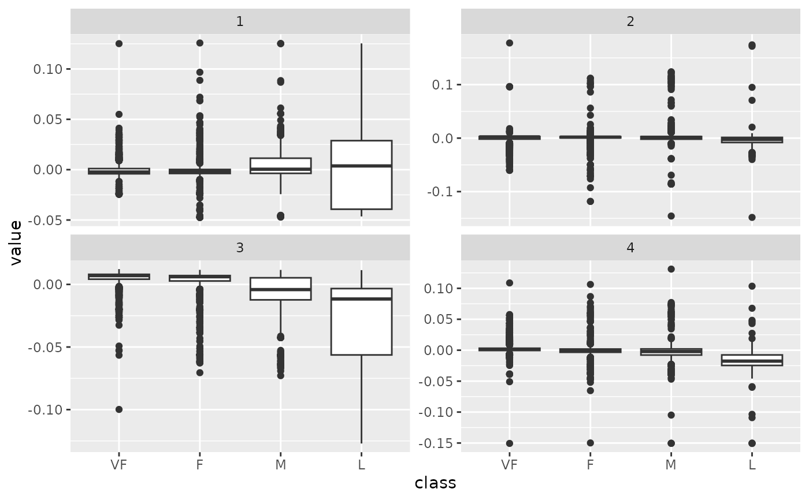
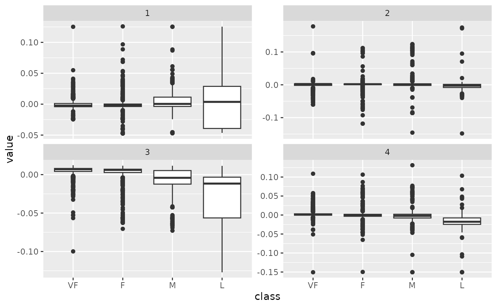

Broom tidies a number of lists that are effectively S3
objects without a class attribute. For example, stats::optim(),
svd() and akima::interp() produce consistent output, but
because they do not have a class attribute, they cannot be handled by S3
dispatch.
These functions look at the elements of a list and determine if there is
an appropriate tidying method to apply to the list. Those tidiers are
implemented as functions of the form tidy_<function> or
glance_<function> and are not exported (but they are documented!).
If no appropriate tidying method is found, they throw an error.
Arguments
- x
A list returned from
irlba::irlba().- ...
Additional arguments. Not used. Needed to match generic signature only. Cautionary note: Misspelled arguments will be absorbed in
..., where they will be ignored. If the misspelled argument has a default value, the default value will be used. For example, if you passconf.lvel = 0.9, all computation will proceed usingconf.level = 0.95. Two exceptions here are:
Value
A tibble::tibble with columns depending on the component of
PCA being tidied.
If matrix is "u", "samples", "scores", or "x" each row in the
tidied output corresponds to the original data in PCA space. The columns
are:
rowID of the original observation (i.e. rowname from original data).
PCInteger indicating a principal component.
valueThe score of the observation for that particular principal component. That is, the location of the observation in PCA space.
If matrix is "v", "rotation", "loadings" or "variables", each
row in the tidied output corresponds to information about the principle
components in the original space. The columns are:
rowThe variable labels (colnames) of the data set on which PCA was performed.
PCAn integer vector indicating the principal component.
valueThe value of the eigenvector (axis score) on the indicated principal component.
If matrix is "d", "eigenvalues" or "pcs", the columns are:
PCAn integer vector indicating the principal component.
std.devStandard deviation explained by this PC.
percentFraction of variation explained by this component (a numeric value between 0 and 1).
cumulativeCumulative fraction of variation explained by principle components up to this component (a numeric value between 0 and 1).
Details
A very thin wrapper around tidy_svd().
See also
Other list tidiers:
glance_optim(),
list_tidiers,
tidy_optim(),
tidy_svd(),
tidy_xyz()
Other svd tidiers:
augment.prcomp(),
tidy.prcomp(),
tidy_svd()
Examples
library(modeldata)
data(hpc_data)
mat <- scale(as.matrix(hpc_data[, 2:5]))
s <- svd(mat)
tidy_u <- tidy(s, matrix = "u")
#> New names:
#> • `` -> `...1`
#> • `` -> `...2`
#> • `` -> `...3`
#> • `` -> `...4`
tidy_u
#> # A tibble: 17,324 × 3
#> row PC value
#> <int> <dbl> <dbl>
#> 1 1 1 0.00403
#> 2 2 1 -0.00436
#> 3 3 1 -0.00196
#> 4 4 1 -0.00444
#> 5 5 1 -0.00437
#> 6 6 1 -0.00437
#> 7 7 1 -0.00431
#> 8 8 1 -0.00436
#> 9 9 1 -0.00434
#> 10 10 1 -0.00440
#> # … with 17,314 more rows
tidy_d <- tidy(s, matrix = "d")
tidy_d
#> # A tibble: 4 × 4
#> PC std.dev percent cumulative
#> <int> <dbl> <dbl> <dbl>
#> 1 1 69.5 0.279 0.279
#> 2 2 67.0 0.259 0.538
#> 3 3 63.9 0.235 0.774
#> 4 4 62.6 0.226 1
tidy_v <- tidy(s, matrix = "v")
#> New names:
#> • `` -> `...1`
#> • `` -> `...2`
#> • `` -> `...3`
#> • `` -> `...4`
tidy_v
#> # A tibble: 16 × 3
#> column PC value
#> <int> <dbl> <dbl>
#> 1 1 1 0.657
#> 2 2 1 0.409
#> 3 3 1 -0.577
#> 4 4 1 0.262
#> 5 1 2 -0.0142
#> 6 2 2 -0.650
#> 7 3 2 -0.137
#> 8 4 2 0.747
#> 9 1 3 0.302
#> 10 2 3 0.332
#> 11 3 3 0.779
#> 12 4 3 0.438
#> 13 1 4 0.690
#> 14 2 4 -0.548
#> 15 3 4 0.205
#> 16 4 4 -0.426
library(ggplot2)
library(dplyr)
ggplot(tidy_d, aes(PC, percent)) +
geom_point() +
ylab("% of variance explained")
 tidy_u %>%
mutate(class = hpc_data$class[row]) %>%
ggplot(aes(class, value)) +
geom_boxplot() +
facet_wrap(~PC, scale = "free_y")

tidy_u %>%
mutate(class = hpc_data$class[row]) %>%
ggplot(aes(class, value)) +
geom_boxplot() +
facet_wrap(~PC, scale = "free_y")
